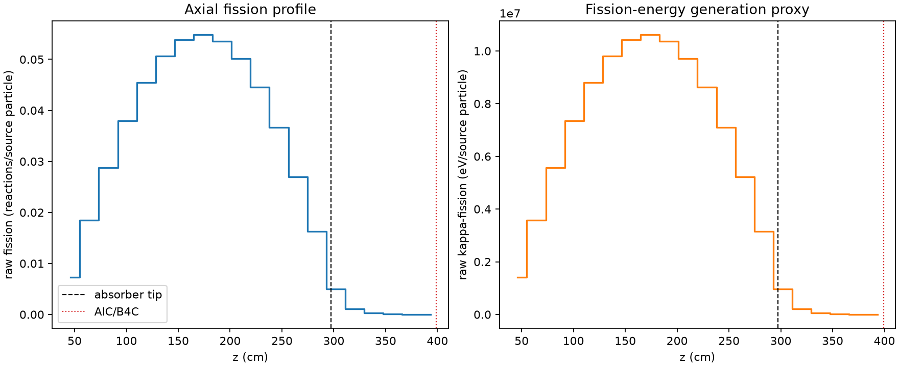
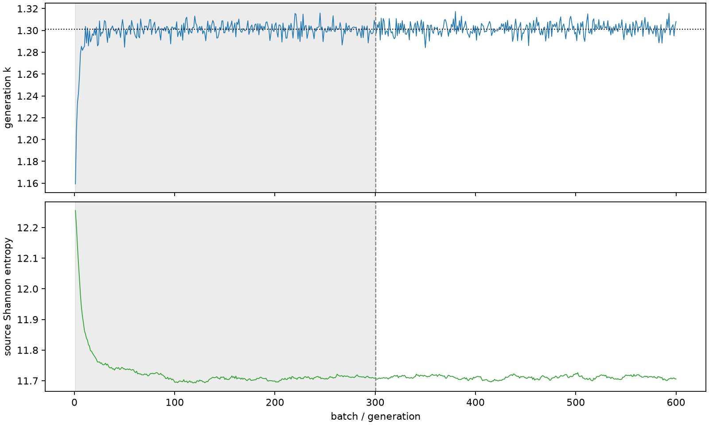

| field | value |
|---|---|
| experiment | V2-STAGE_128_OGRENCI_04-0016 |
| k | 1.3012212227422255 |
| MC standard error | 0.00018203879958461928 |
| seconds | 933.1234207960006 |
| acceptance | not_assessed |
| convergence | review_required |
Completed is output integrity only; physical and statistical review required. Zero tallies do not prove zero production or zero uncertainty.
| diagnostic | value |
|---|---|
| geometric fuel voxels | 5280 |
| zero fission tally voxels | 0 |
| low signal fuel voxels | 674 |
| low signal fission share | 0.0001041483041878197 |
| low signal kappa share | 0.0001041802130568348 |
| important fission share | 0.950116873546333 |
| previous filter included | 4606 |
| duration estimate s | 1562.5173488400023 |
| actual minus estimate s | -629.3939280440018 |
| fission relative MC error | statistics |
|---|---|
| all_geometric_fuel | {"voxels": 5280, "positive_mean_voxels": 5280, "zero_mean_voxels": 0, "undefined_relative_error_voxels": 0, "median": 0.0108514393906824, "p95": 0.46413114242461756, "maximum": 0.9862589379855462} |
| low_signal | {"voxels": 674, "positive_mean_voxels": 674, "zero_mean_voxels": 0, "undefined_relative_error_voxels": 0, "median": 0.4014952355834188, "p95": 0.8169600326152674, "maximum": 0.9862589379855462} |
| important_95pct | {"voxels": 3221, "positive_mean_voxels": 3221, "zero_mean_voxels": 0, "undefined_relative_error_voxels": 0, "median": 0.00869572651511591, "p95": 0.013346119659503174, "maximum": 0.016693854456518758} |
| outside_previous_filter | {"voxels": 674, "positive_mean_voxels": 674, "zero_mean_voxels": 0, "undefined_relative_error_voxels": 0, "median": 0.4014952355834188, "p95": 0.8169600326152674, "maximum": 0.9862589379855462} |
| kappa_fission relative MC error | statistics |
|---|---|
| all_geometric_fuel | {"voxels": 5280, "positive_mean_voxels": 5280, "zero_mean_voxels": 0, "undefined_relative_error_voxels": 0, "median": 0.010840584446152692, "p95": 0.46334834976678846, "maximum": 0.9861048756270792} |
| low_signal | {"voxels": 674, "positive_mean_voxels": 674, "zero_mean_voxels": 0, "undefined_relative_error_voxels": 0, "median": 0.4010665058418358, "p95": 0.8161801227753624, "maximum": 0.9861048756270792} |
| important_95pct | {"voxels": 3221, "positive_mean_voxels": 3221, "zero_mean_voxels": 0, "undefined_relative_error_voxels": 0, "median": 0.008686535425809576, "p95": 0.013334325817135657, "maximum": 0.016675338105008555} |
| outside_previous_filter | {"voxels": 674, "positive_mean_voxels": 674, "zero_mean_voxels": 0, "undefined_relative_error_voxels": 0, "median": 0.4010665058418358, "p95": 0.8161801227753624, "maximum": 0.9861048756270792} |
| axial bin | fission share | kappa-fission share |
|---|---|---|
| 1 | 0.01377236490458566 | 0.013772879152117825 |
| 2 | 0.03468522263632294 | 0.03468518288702337 |
| 3 | 0.05406390151665755 | 0.05406374726068356 |
| 4 | 0.07128864787365675 | 0.071288597865409 |
| 5 | 0.08555857253617066 | 0.08555837492669349 |
| 6 | 0.09532565880741814 | 0.09532534564246696 |
| 7 | 0.10123038609170151 | 0.10122994178082345 |
| 8 | 0.10304693050361904 | 0.10304675857891414 |
| 9 | 0.10076447840915846 | 0.1007641150363587 |
| 10 | 0.09424802858014546 | 0.09424765867367647 |
| 11 | 0.08376285954709747 | 0.08376255484853035 |
| 12 | 0.06900249524323138 | 0.06900224515671137 |
| 13 | 0.05072491929332022 | 0.05072483487044489 |
| 14 | 0.03055992495690573 | 0.03055978777231807 |
| 15 | 0.009341935399220812 | 0.009343460423262477 |
| 16 | 0.0019698454155795647 | 0.0019704846758926233 |
| 17 | 0.0004937998147350419 | 0.0004939520398070047 |
| 18 | 0.00012313997050144955 | 0.00012317641305336824 |
| 19 | 3.04287595139577e-05 | 3.043990237509551e-05 |
| 20 | 6.459740458357358e-06 | 6.462093437671521e-06 |
Histories include the inactive-to-active transition at batch 300. kappa-fission approximates fission energy production, not total heat deposition.

